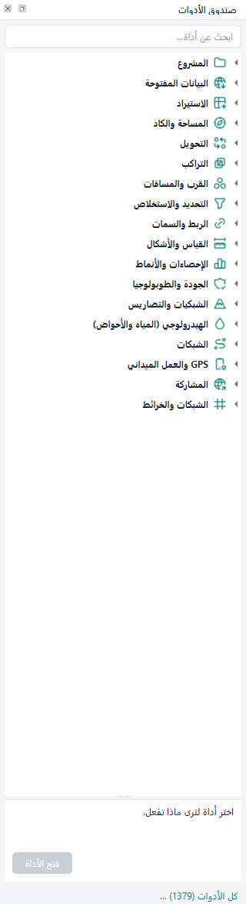

Free desktop GIS for Windowsنظام معلومات جغرافية مجاني لويندوز
Biruni GIS is an open-source desktop GIS based on QGIS, with a ribbon interface and a full Arabic right-to-left interface. It works offline. There is no sign-in, and the licence never runs out. البيروني نظام معلومات جغرافية مفتوح المصدر لسطح المكتب، مبني على QGIS، بواجهة شريطية وواجهة عربية كاملة من اليمين إلى اليسار. يعمل دون إنترنت، ولا يحتاج إلى تسجيل دخول، ورخصته لا تنتهي.
| Biruni GIS 30°N 31°E | |
|---|---|
| Releaseالإصدار | 0.2 current · 0.3 next0.2 الحالي · 0.3 القادم |
| Systemالنظام | Windows 10 / 11, 64-bitويندوز 10 / 11، 64-bit |
| Languagesاللغات | English, العربية. Since 0.3: Español, Português, Français, Türkçe, فارسیالعربية، English. ومنذ 0.3: Español وPortuguês وFrançais وTürkçe وفارسی |
| Licenceالرخصة | GNU GPL, freeGNU GPL، مجاني |
| Based onمبني على | QGIS |
| Toolsالأدوات | About 1,370 geoprocessing toolsنحو 1,370 أداة معالجة مكانية |

Coming from ArcGISقادم من ArcGIS
Projects, symbols, scripts and models open in Biruni, and you can save back for ArcGIS Pro. Items marked since 0.3 come with the next release.تنتقل معك مشاريعك ورموزك وسكربتاتك ونماذجك، ويمكنك الحفظ لـ ArcGIS Pro مرة أخرى. العناصر المعلَّمة منذ 0.3 تأتي مع الإصدار التالي.
- Open .aprx .mapx .lyrx .mxdافتح .aprx .mapx .lyrx .mxd
Layers, groups, colours, labels and definition queries. ArcMap symbology since 0.3: the renderer type matched on 99.9% of 1,307 real layers.الطبقات والمجموعات والألوان والتسميات والفلاتر. ورموز ArcMap منذ 0.3: تطابق نوع الترميز في 99.9% من 1,307 طبقات حقيقية.
- Run your arcpy scriptsشغّل سكربتات arcpysince 0.3منذ 0.3
About 200 arcpy functions (cursors, geometry, Buffer, Clip, Dissolve, Spatial Join…) on shapefile, GeoPackage and File Geodatabase. No licence needed.نحو 200 دالة من arcpy (Cursors والهندسة وBuffer وClip وDissolve وSpatial Join…) على shp وGeoPackage وFile Geodatabase، دون رخصة.
- Readiness scanفحص الجاهزية للانتقالsince 0.3منذ 0.3
Point it at your folders. It checks every map, script and model and reports what opens 100%, what changes and what is missing.اختر مجلداتك، فتُفحص كل خريطة وسكربت ونموذج، وتحصل على تقرير بما سيفتح 100% وما سيتغير وما ينقص.
- ModelBuilder modelsنماذج ModelBuildersince 0.3منذ 0.3
Models in .atbx toolboxes become models in the Biruni toolbox. A step that cannot be converted stays as a visible note.تتحول النماذج الموجودة في .atbx إلى نماذج في صندوق الأدوات، وتبقى الخطوة التي لا يمكن تحويلها ملاحظةً ظاهرة ولا تُحذف دون علمك.
- Save back for ArcGIS Proالحفظ لـ ArcGIS Prosince 0.3منذ 0.3
Writes .aprx, .mapx and .lyrx with symbols, labels and layouts, checked by opening them in ArcGIS Pro. Half the team can stay on Pro.يحفظ .aprx و.mapx و.lyrx بالرموز والتسميات والمخططات، وقد تحققنا منها بفتحها في ArcGIS Pro نفسه، فيمكن لنصف الفريق البقاء على Pro.
- Your company's ArcGIS servicesخدمات ArcGIS في شركتكsince 0.3منذ 0.3
Connect to ArcGIS Server, Portal or Online and edit feature services. You can also take a layer offline and sync it back with conflict checks.اتصل بـ ArcGIS Server أو Portal أو Online وعدّل الخدمات، أو انقل الطبقة للعمل دون اتصال ثم زامن تعديلاتك مع كشف التعارضات.

What is insideما الذي فيه
About 1,370 geoprocessing tools under a familiar ribbon. The search box finds any tool, also by its ArcGIS name.نحو 1,370 أداة معالجة مكانية تحت شريط مألوف. يجد مربع البحث أي أداة، حتى باسمها في ArcGIS.

- Project foldersالمشروع مجلد واحد
Map, project database, data, outputs and exports in one folder. Copy all data in with one click, or package it as ZIP.الخريطة وقاعدة بيانات المشروع والبيانات والمخرجات في مكان واحد. انسخ كل البيانات إليه بنقرة، أو احزمه في ملف ZIP.
- Time machineآلة الزمن
Every save is a version you can restore. Since 0.3, unsaved edits come back after a power cut.كل حفظ نسخة يمكنك الرجوع إليها. ومنذ 0.3 تعود التعديلات غير المحفوظة إذا انقطعت الكهرباء.
- CAD and surveyالكاد والمساحة
DXF to GIS with texts, blocks, true arcs and Arabic SHX fonts. Helmert and affine fitting, COGO, parcel subdivision, deed text to parcels.من DXF إلى GIS بالنصوص والبلوكات والأقواس الحقيقية وخطوط SHX العربية، والتوقيع بهلمرت والأفيني، وCOGO، وتقسيم القطع، ومن نص الصك إلى القطعة.
- Check my dataافحص بياناتي
One scan of every layer with safe fixes, topology rules and attribute rules. Since 0.3, errors are explained in plain language.فحص واحد لكل الطبقات مع إصلاحات آمنة وقواعد الطوبولوجيا وقواعد الخصائص. ومنذ 0.3 تُشرح الأخطاء بلغة بسيطة.
- Engineering officeالمكتب الهندسيsince 0.3منذ 0.3
Guesses the coordinate system, delivery specs and checks, version comparison, bill of quantities, setbacks, parcels from scanned plans.تعرّف نظام الإحداثيات، ومواصفات التسليم وفحصها، ومقارنة نسختين، وجدول الكميات، والارتدادات، والقطع من المخطط الممسوح ضوئيًا.
- Hydrology, terrain, LiDARالهيدرولوجيا والتضاريس والليدار
Streams and watersheds in one click, plus all SAGA and GRASS tools. Since 0.3: ground surface from drone points, stockpile volumes and profiles.المجاري والأحواض بنقرة، وكل أدوات SAGA وGRASS. ومنذ 0.3: سطح الأرض من نقاط الطائرات المسيّرة، وأحجام الردم والحفر، والقطاعات.
- Spatial statisticsالإحصاء المكانيsince 0.3منذ 0.3
Hot spots, clusters and outliers, regression, and an advisor that suggests the right test for your question.النقاط الساخنة والعناقيد والقيم الشاذة والانحدار، ومستشار يقترح الاختبار المناسب لسؤالك.
- Map sheets and booksلوحات وأطالس
A finished map sheet in one click with grid, north arrow, scale and legend, Arabic-Indic digits included. Web maps and KMZ too.لوحة خريطة جاهزة بنقرة: شبكة وسهم شمال ومقياس ومفتاح، وبالأرقام العربية أيضًا، إضافة إلى خرائط الويب وKMZ.
- Arabic and right-to-left textالعربية والكتابة من اليمينsince 0.3منذ 0.3
Correct Arabic, Persian and Urdu labels, also on curved lines. Hijri and other calendars. Legacy Arabic CAD fonts repaired.تسميات عربية وفارسية وأردية صحيحة حتى على الخطوط المنحنية، والتقويم الهجري وغيره، وإصلاح خطوط الكاد العربية القديمة.
Field work with a phoneالعمل الميداني بالهاتف
Any phone becomes a field device through its browser, with no app and no cloud account. Everything in this section is new in 0.3.يصبح أي هاتف جهازًا ميدانيًا عبر متصفحه، دون تطبيق ودون حساب سحابي. كل ما في هذا القسم جديد في الإصدار 0.3.
- Field photos and formsصور ميدانية ونماذج
Scan a code. Photos and answers go from the phone straight to the map on your computer.امسح الرمز، فتصل الصور والإجابات إلى خريطتك مباشرة من الهاتف إلى الحاسوب.
- Live GPS and the team on the mapGPS مباشر والفريق على الخريطة
Track the team, guide someone to a point or a boundary, and average readings for a better position.تابع الفريق، ووجّه أحدهم إلى نقطة أو حدود، واحسب متوسط القراءات لموقع أدق.
- Share your map liveشارك خريطتك مباشرة
Someone opens a link and sees your map as you work.يفتح أحدهم رابطًا فيرى خريطتك أثناء عملك.
- Living QR on printed maps, sealed deliverablesرمز QR حي على الخرائط المطبوعة، وختم لملفات التسليم
A printed map that opens online, and a signature that shows if a delivered file was changed.خريطة مطبوعة تُفتح على الإنترنت، وتوقيع يكشف أي تعديل على ملف بعد تسليمه.

How it comparesمقارنة
No account and no licence server, and nothing is sent anywhere. Biruni connects to the internet only for what you ask for (basemaps, open-data downloads) and once a day to check for a new version.لا حساب ولا خادم رخص، ولا يُرسل شيء إلى أي مكان. لا يتصل البيروني بالإنترنت إلا لما تطلبه أنت (خرائط الأساس وتنزيل البيانات المفتوحة)، ومرة في اليوم للتحقق من وجود إصدار جديد.
| Itemالبند | Biruni GIS | Typical commercial desktop GISبرامج GIS التجارية المعتادة |
|---|---|---|
| Priceالسعر | Free, foreverمجاني للأبد | Yearly licence + extensions + creditsرخصة سنوية + إضافات + credits |
| Sign-inتسجيل الدخول | Neverأبدًا | Named user accountحساب باسم المستخدم |
| Works offlineالعمل دون إنترنت | Alwaysدائمًا | Licence must be checked outيجب حجز الرخصة أولًا |
| Spatial, 3D and network analysisالتحليل المكاني وثلاثي الأبعاد والشبكات | Includedموجودة | Paid extensionsإضافات مدفوعة |
| Field data collectionجمع البيانات من الميدان | Any phone browser, no cloudمن متصفح أي هاتف، دون سحابة | Mobile user typesاشتراك لكل مستخدم ميداني |
| Arabic interfaceالواجهة العربية | Full right-to-leftكاملة من اليمين إلى اليسار | Variesتختلف |
| Source codeالكود المصدري | Open (GPL)مفتوح (GPL) | Closedمغلق |
Downloadالتنزيل
Download the installer from the releases page and run it. An Arabic PDF guide is attached to each release.نزّل ملف التثبيت من صفحة الإصدارات وشغّله. مع كل إصدار دليل PDF بالعربية.
- SystemالنظامWindows 10 or 11, 64-bitويندوز 10 أو 11، 64-bit
- DiskالقرصAbout 2.5 GB of free spaceنحو 2.5 جيجابايت من المساحة
- Older laptopsالحواسيب القديمةA light modeوضع خفيفsince 0.3منذ 0.3
- SettingsالإعداداتKeeps its own settings and never touches other GIS installsإعداداته مستقلة، ولا يمس أي برنامج GIS آخر مثبت
Questionsأسئلة
Is it really free?هل هو مجاني فعلًا؟
Yes. Biruni GIS is open source under the GNU GPL. You can use it at work, at university and at home, on as many computers as you like.نعم. البيروني مفتوح المصدر برخصة GNU GPL، ويمكنك استخدامه في العمل والجامعة والمنزل، على أي عدد من الأجهزة.
Can it replace ArcGIS Pro for me?هل يمكن أن يكون بديلًا لـ ArcGIS Pro عندي؟
For most daily mapping, editing, analysis and survey work, yes. Some ArcGIS-only data features (topology rules stored in a geodatabase, attribute rules, versioning) are not supported yet. Run the readiness scan on your own folders to see exactly what will work.في معظم أعمال الخرائط والتحرير والتحليل والمساحة اليومية، نعم. بعض خصائص ArcGIS غير مدعومة بعد، مثل قواعد الطوبولوجيا المخزنة في الـ geodatabase، وقواعد الخصائص، والـ Versioning. شغّل فحص الجاهزية على مجلداتك لتعرف بدقة ما الذي سيعمل.
Will it change my existing QGIS or ArcGIS?هل سيغيّر شيئًا في QGIS أو ArcGIS لديّ؟
No. Biruni keeps its own profile in %APPDATA%\Biruni GIS and opens your ArcGIS files without changing them.لا. يحفظ البيروني إعداداته في %APPDATA%\Biruni GIS بشكل مستقل، ويفتح ملفات ArcGIS دون تعديلها.
Why does Windows warn me when I run the installer?لماذا يحذرني ويندوز عند تشغيل ملف التثبيت؟
The installer is not code-signed yet. Choose “More info”, then “Run anyway”. Signing is being set up with SignPath.ملف التثبيت غير موقّع رقميًا بعد. اختر «More info» ثم «Run anyway». يجري إعداد التوقيع مع SignPath.
How can I help?كيف أساعد؟
Report problems or ideas on GitHub Issues, improve a translation, or tell a colleague.أبلغ عن مشكلة أو فكرة على GitHub Issues، أو حسّن ترجمة، أو أخبر زميلًا عنه.